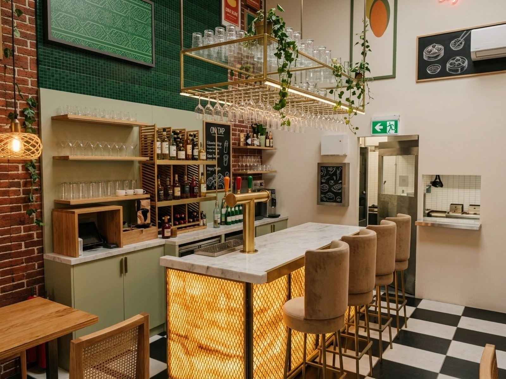
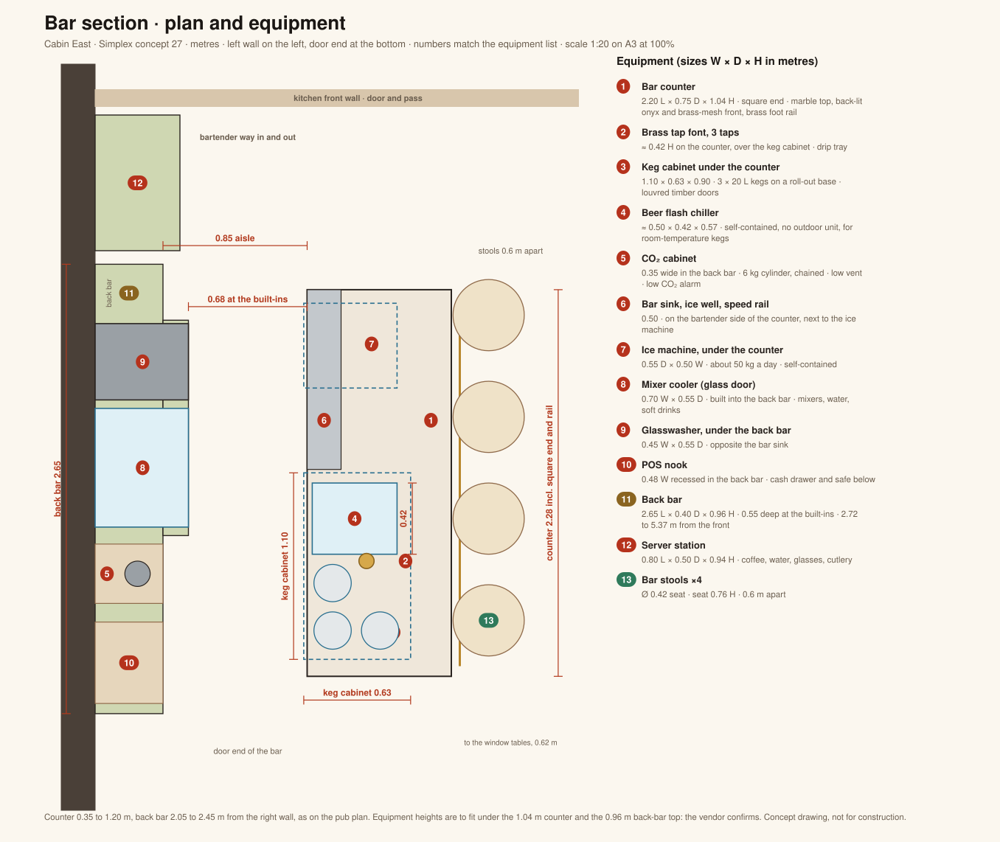

Simplex · concept 27 · bar on the left wall · counter 2.20 × 0.75 m
The bar section from the floor plan and the 3D model: every unit at its planned size and place, with realistic pictures of the ice machine, flash chiller, mixer fridge, glasswasher and keg cabinet, and photoreal views of the bar made from the model.

The bar from the door · photoreal from the 3D modelBar counter, keg cabinet, chiller, ice machine, sink, back bar with the built-in mixer cooler and glasswasher, POS nook and the server station, at the sizes on the pub plan. Numbers match the equipment list and the cards below.

Pictures are generated catalogue-style images of the kind of unit the plan allows for. They show the type and layout, not a specific make; the size on each card is the space the plan allows, so do not quote a wider unit.
Each view has three states from the same camera. Exact model: the plain 3D model. Textured model: the same model with real photographs on it. Photoreal: a Google Flow image made from the textured model plus the equipment pictures above. Tap an image to cycle. Flow is close but not exact; the plan and the model govern sizes.
Sizes and positions are from the pub plan and 3D model. Ratings, water and drain points are typical for this kind of equipment and are for the vendor to confirm; the backup-power list is from the model (chiller, mixer cooler and ice machine on backup). Generated images show intent, not a supplier's product.